bosses
prehard mode
- King slime
- Eye of cthulhu
- Brain of cthulhu or Eater of worlds
- Skeletron
- Queen bee
- Wall of flesh
hard mode
- Queen slime
- The twins
- Skeletron prime
- Destroyer of worlds
- Plantera
- Golem
- Duke Fishron
- Empress of Light
- Lunatic Cultist
- Moon Lord

king slime
To summon the king slime you need a "slime crown" whouch is made with 20gel wuch is droped by slimes and a crown. to make a crown you need ether 5 gold or 5 platnum bars and 1 ruby at a crimson or
cruption alter or he will spawn natrly when a slime rain acors.
The king slime will jump around and when you are to fare away from him he will telaport to you. He will also spawn differant types of slimes. when you kill
the king slime in cassic mode it can drop a grapple huck, a slime gun, and a ninja costume, a slidafier, and a slimy sadle.
in expert mode it can drop all the cassic drops and a royal gel and in master mode it will drop all the stuff from both cassic
and expert modes but it will also drop a trophy and a slime pet. for killing it you should use percing weppowns
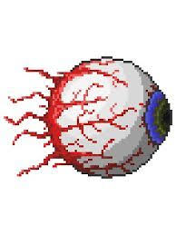
eye of cthulhu
To summon the eye of cthulhu you need a "suspices looking eye" whouch can be found in a chess under ground or crafted. To craft it you need five lenzes whouch are droped by floting eyes. Or he will spawn
natrly at night. The eye will flout around and charge at you. He will also spawn flouting eyes to attack you. In the second faze he will tern in to a mouth and cherge at you evan more. If you are in expert
mode or master mode he will have a threed faze where he will charge at you nonstop. When you kill him he will drop demonite of crimtane ore in classic mode and in expert mode he will drop the seld of cthulhu.
In master mode he will drop a trophy and a pet. when fighting him you should use bows, staves or magic books.
brain of cthulhu
To summon the brain you need to ether brack 3 hearts in the under ground crimson or make and use a bloody spine.
To make a Bloody spine you need 30 vicious powder. to make vicious powder it takes one vicious mushrom at a bottle. the brain will float
around and sometimes charge at you. in first faze there will be a ton of eyes floating around, you need to kill all the eyes to be able to
attack the brain. in the second faze he will make 3 clones that are tranparint and charge at you. the lower the helth gets the less tranparint
the clones are. when you kill him he will drop crimtane ore and tissue samples. in expert mode it will drop the brain of confushon. And in
master mode it will drop a trophy and a pet. to kill him you should use Large swords or melee weapons that are long ranged. After killing him
will make metor drop alwoing you to get metor armer and weapons.
needed
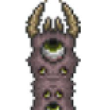
eater of worlds
To summon the eater you can ether brak 3 orbs found in the under ground cerupion or by making worm food. to make worm food you need 15 rotten chunks and
30 vile powder. to make vile powder you need vile mushrooms. it will berole under ground and jump out to attack you. He will also shout spit at you. As you
damige he will brack into mutaple worms. when you kill him he will drop Shadow scales and Demonite ore. in expert mode it will drop Worm Scarf. in master
mode it will drop a trophy and a pet. when you fight it you should use percing weapons.
needed
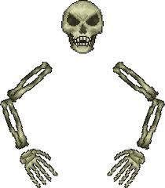
skeletron
To summon skeletron you must speak to the old man at the top of the dongon at night and sulecting the curse option. when you summon him he will float
around andtry to punch you.to kill him you must attack his arms frist. after doing anoth damige both his ar,s will brack alowing you to attack
his head and putting him in second faze. in second faze he will chace you aroud. whe you kill him he will drop the book of skulls. in expert
mode he will drop the bone glove. when fighting him you should use a ranged weapons.
needed

queen bee
To summon the queen bee you need to eather brack a larva fond in a bee hive fond in the under ground gungle or by using an Abeemination. to craft it you
need 5 Honey Blocks, 5 Hives, 1 Stinger, and 1 Bottled Honey. her attacks in clude flying back and forth three times and summoninf smaller bees. when you kill her
she will drop honeycomb, beenade, bee wax,bottled honey,bee gun, bee keeper, bee's knees, hive wand, bee hat,honeyed goggles. in expert mode she will drop the hive pack
. and in master mode it will drop a trophy and a pet. to kill her you should use percing weapons
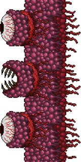
wall of flesh
To summon the wall of flesh you need a vodo dall and you need to thorw it into lave in hell. to gat a vodo dall yu need to kill a vodo demon. if it is not
working make shure the guide is alive.when fighting it, it will be a wall on one side of the screan and move to the opusit side. it will shoot lavers at you
and if you are too fare away it will summon wors yo attack you. when you kill it, it will drop pwnhammer, a emblem, the bracker blade, the clock work asolt rifle, the lazer gun, and the firecracker
. on expert mode it will drop a demon heart. an din master mode it will drop a trophy and a pet.to kill it you should use ranged weapons.
needed

queen sliume
to summon her you need a Gelatin crystal. You can find Gelatin crystal in the underground hallow biome. When you fight it it will be a lot like king slime
but in the second faze she will grow wings and shout pogectils at you. when you kill her she will drop crystal assassin armor, a grraple hook, the blade staff and a mounte
. in expert mode volatile gelatin. and in master mode a pet and a trophy. when fighting her you will want percing weapons.
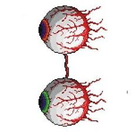
the twins
to summon them you can eather whate untill they spown on there own or you can us a Mechanical eye. to craft the Mechanical eye you need 5 Iron Bars / 5 Lead Bars. 3 Lens. 6 Souls of Light.
when fighting them there will be two eyes flouting around each one has it own attack pattens and health. once you do anoth damige to one eye only that eye will go into second faze
. It is recomened to kill one at a time. when you kill the twins they will drop Souls of sight, and Hallowed bars. in expert mode it will drop a mechanical wlagen part. and in master mode it
will drop a pet and a trophy. Also once you kill all mecs you will be able to get life frut and fight plantera. when fighting them you need high, consistent damage.
needed
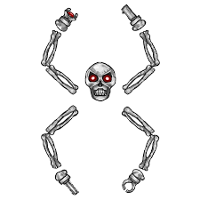
skeletron prime
to summon them you can eather whate untill they spown on there own or you can us a Mechanical skull. to craft the Mechanical skull you will need 30 bones
, 5 Iron or lead, 3 souls of light, and 3 souls of night. the boss is if skeletron had 4 arms but you don't need to kill each arm to kill him. when you kill
him he will drop hallowed bars, and souls of fright. in expert mode he will drop a mechanical wlagen part. and in master mode it
will drop a pet and a trophy. to fight him you should use continous attacks. Also once you kill all mecs you will be able to get life frut and fight plantera
needed
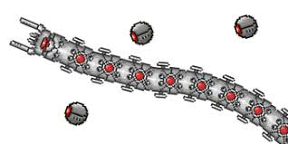
destroyer
to summon them you can eather whate untill they spown on there own or you can us a Mechanical worm. to craft the worm you need Souls of Night. Rotten Chunks, Copper Bars, and Iron Bars
. the destroyer is a lot like the eater but when you damieg it, it will spown enames and it dosn't brack apart. when you kill it it will drop hallowed bars and soul of might.
in expert mode he will drop a mechanical wlagen part. and in master mode it
will drop a pet and a trophy.to kill it you will want percing weapons. Also once you kill all mecs you will be able to get life frut and fight plantera
needed

plantera
to summon plantera you need to brack a bulb that looks like a pink flower. plantera will clime around and chace you. in the second faze she will shot
stuff. when you kill her she will drop a temple key, nettlr burst, wolf gum, leaf blower, pygmy soft, grenade launcher, venus magnum, seedgun, flower power and axe
in expert mode she drops the spore sack. in master mode she will drop a pet and a trophy. to fight her you can use anything.
needed
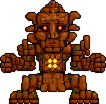
golem
to summon golem you ned to use a lihzahrd power cell on a lihzard sltar. power cells are droped by lihzahrds.when you fight him he'll jump around and try to punch you
. in its second faze his head will come of and shoot at you. when you kill it, he will drop Picksaw, Beetle Husk, Stynger, Possessed Hatchet, Sun Stone, Eye of the Golem, Heat Ray, Staff of Earth, Golem Fist.
in expert mode he will drop siny stone. in master mode he will drop a pet dn a tropthy.you can use any weapon to kill him.
needed
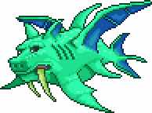
duke fishron
to summon duke you need to find a truffle worm and fish with it at an ocean. when fighting him he will summon sharknados and fly around acashonly charging at you
in his finnle phase he will began to teleport around and charg at you evan more. when you kill him he will drop bubble gun, flairon, razorblade typhoon, tempest staff,
tsunami, fishron wings. in expert mode shrimpy truffle. and in master mode he will drop a tropthy and a pet

emperss of light
to summon the empress of light you need to kill a Prismatic Lacewing at night (if you kill on at day she will one shot you). when you are fighting her she
will shoot none stop(she is one one of the hardest bosses in the game). when you kill her she will drop starlight, kaleidoscope, night clothes, stella 2,
emperss wings. in expert mode she will drop soaring insignia. in master mode she will drop a trophy and a pet.you can use any weapon to kill her.
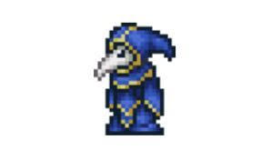
lunatic cultist
to summon the cultsist you must go to the dungon and kill the npcs.When fighting the cultist they will fly around and shoot stuff at you. ever now and then they will make clones of them self.
to deal with the clones you must hit the right one or they will summon a dragon. whin you kill them they will drop the Ancient Manipulator. they do not have an expert mode drop. in master mode they will drop a trophy and a pet.
you can use any weapon to kill them.
needed
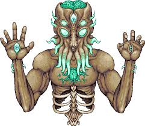
moon lord
to summon the moon lord you can use a Celestial Sigil or by killig all the pillers. when you fight he he will be in the background. To kill him you must attack all his eye then he will open hes core.
when you kill him you will get the credits and he will drop meowmere, luminite ores, portel gun, SDMG, star ferry,last prisum, teranrn, lunar flare. in expert mode he will drop celestial starboard.
in master mode he will drop a pet and a trophy